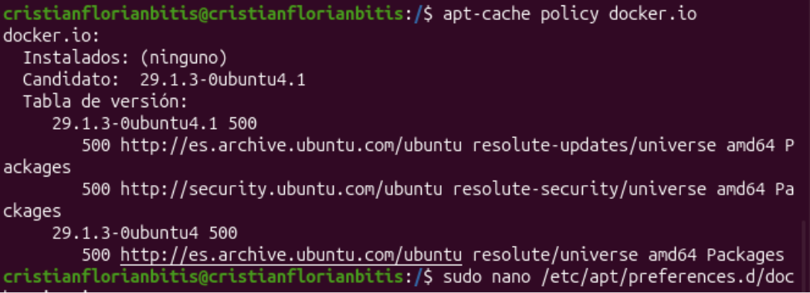
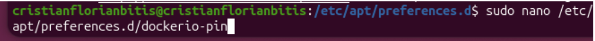
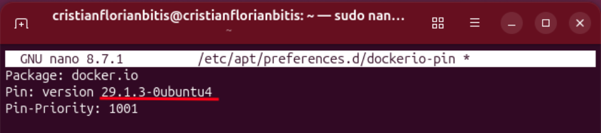
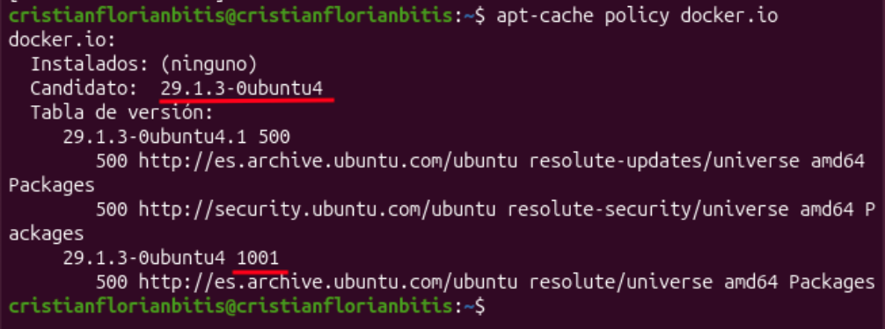
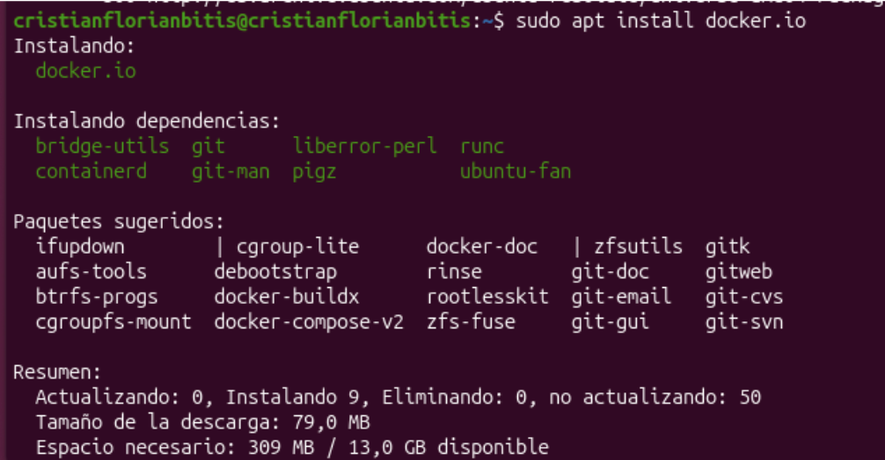
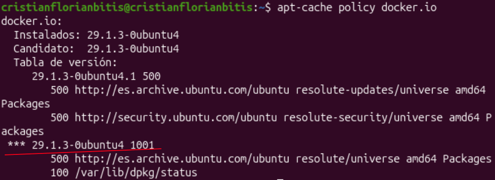

1. Pinning de paquets
El pinning de paquets serveix per donar més prioritat a una versió concreta d'un paquet. En aquesta pràctica ho fem amb el paquet Docker.
1.1. Consultar la versió del paquet
Primer executem la comanda
apt-cache policy docker.io
per veure les versions disponibles i la seua prioritat.
Al principi, la versió té una prioritat de 500.

1.2. Crear el fitxer de configuració
Després obrim l'editor Nano amb la comanda
sudo nano /etc/apt/preferences.d/dockerio-pin.
Aquest fitxer serveix per configurar la prioritat del paquet Docker.

1.3. Configurar el pinning
Dins del fitxer escrivim el nom del paquet, la versió que volem prioritzar i la prioritat 1001. Així indiquem a APT que done preferència a aquesta versió.

1.4. Comprovar els canvis
Tornem a executar la comanda
apt-cache policy docker.io
per comprovar si s'ha aplicat el canvi. Ara la versió configurada
apareix amb una prioritat de 1001, en lloc de 500.

1.5. Instal·lar Docker
Executem la comanda sudo apt install docker.io
per instal·lar Docker i les dependències necessàries perquè funcione.
El sistema mostra els paquets que s'instal·laran i l'espai que ocuparan.

1.6. Comprovació final
Finalment, tornem a executar
apt-cache policy docker.io
per comprovar que Docker està instal·lat i que la versió configurada
té una prioritat de 1001. Això indica que el pinning s'ha aplicat
correctament.
